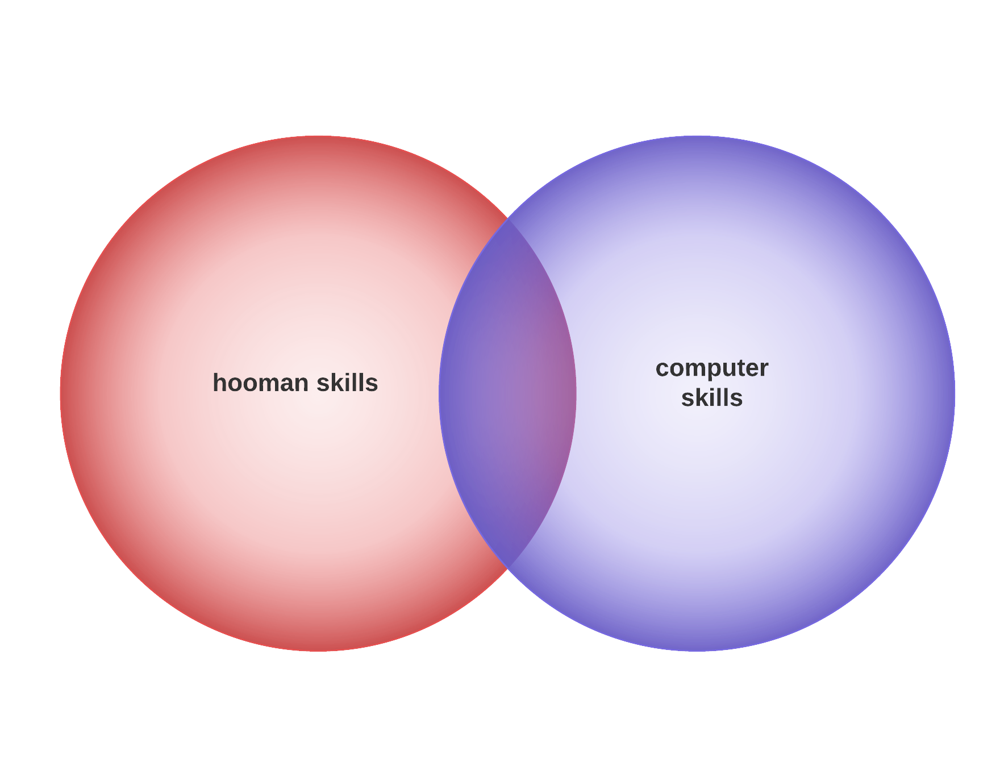

Functional Programming
What Even?!
About Me
.
Matt Parsons
this is me about two years ago trying to be an "IT PROFESSIONAL"
this is me now
(yes, haskell will do that to you)
(and maybe vim)
- Programming for 1½ years
- JAVA i guess
- Jolly JavaScripting
- Responsible Rubying
- Heroic Haskelling
i am such a beginner
why am i talking to professionals
they're going to know how little i know
oh god what is happening
really though, what even is functional programming
Telling Computers What To Do
- Amelia Bedelia effect
Talking... At Computers?
Talking At Computers
- We have to know exactly what we want
- We have to express that in exactly the right way
-
It's so easy to screw up
Talking To Computers
Talking to Computers
Let the computer talk back
sometimes, maybe

Common CPU Backtalk
- Syntax highlighting, checking, formatting
- Linting
- Automated test suites
Syntax Halp
- Grammatically correct code
- Tremendously helpful
# spec/some_class_spec.rb
class SomeClass
def do_something
some_array.each do |item|
puts "#{item} is cool i guess"
end
end
endBut...
Colorless Green Ideas Sleep Furiously
wtf???
Syntactically correct sentences can be meaningless
or worse, mean something other than what we intended
Linting
Rubocop, jshint, etc.
"This is grammatically correct, but you probably don't want to do this"
Test Suites!
Now that's getting closer!
"I want the code to do exactly these things"
Computer: "Your code does what the tests say!"
But...
Test writing is hard
And it's easy to miss corner cases
What if there were some way to enumerate test cases automatically... ;)
Is there some way to make the computer... understand?
This is it. This is the motivation.
The more the computer can understand, the more it can help us.
And I need all the help I can get!
Big Three
- Pure Functions
- Referential Transparency
- A Good Type System
Pure Functions
- A function can't have any side effects
- Given the same input, a function will always return the same output
A side effect is "something that happens outside of the function"
- Printing to the screen
- updating a global/class/instance variable
- reading from the database
-
rm -rf
- etc...
Referential Transparency
Whenever you have an expression that looks like
some_thing = another_thing
Then you can use some_thing and another_thing interchangeably
Equational Reasoning
A phrase that's entirely too fancy
Types
ain't your daddy's int
or ArrayList<String>
or HashMap<String, ArrayList<Object>>
Mathemagical Proofs What
That's all well and good...
But what's functional programming got to do with it?
I haven't seen a single map, filter, reduce...
What are those things called...
Yonads? Bronads?
Functional Programming
Making our code easier to understand for humans and computers by simplifying it
Where did it come from?
History Lesson
oh god not history
- Alonzo Church discovered The Lambda Calculus
- Alan Turing discovered The Turing Machine
- These models can compute anything that can be computed
history is the literal worst
Lambda Calculus
- All of math can be expressed as anonymous functions
- LISP (1958) is straight up lambda calculus
- ML (1973) started as a proof assistant based on typed lambda calculus
- Haskell (1990) is invented for academics to experiment with laziness and purity
Turing Machines
An imaginary machine with infinite read/write tape, can move left/right on it, has a state machine
- Dominates programming and computer science
- Assembly, Algol, C, C++, Java
- (fun fact: Algol almost didn't support recursion!)

Much programming
Wow
GOTO Considered harmful
(1968)
GOTO Hell
oh crap sorry i don't mean that, about, like, y'all
oh man this isn't going well
Behold!
for (int i = 0; i <= array.length; i++)
{
printf("%d\n", array[i]);
}The face of controversy!
Ugh this is too difficult
We need to make it simpler
Objects to the rescue!
- Alan Kay's Smalltalk programming language envisions a program as objects sending messages to each other
- Object Oriented Programming
- Promptly ruined by Java and C++
Maybe not?
OOP has like, 23 design patterns ?!
Some of which are actually anti patterns? !?
(Singleton, I'm looking at you)
public final class Main {
public static void main(final String[] args) {
final ApplicationContext context = new ClassPathXmlApplicationContext("spring.xml");
final FizzBuzz myFizzBuzz = (FizzBuzz) context.getBean("standardFizzBuzz");
final FizzBuzzUpperLimitParameter fizzBuzzUpperLimit =
new DefaultFizzBuzzUpperLimitParameter();
myFizzBuzz.fizzBuzz(fizzBuzzUpperLimit.obtainUpperLimitValue());
((ConfigurableApplicationContext) context).close();
}
}halp?
There are no "laws" about OOP
It's a fragile system
Requires a lot of skill and experience to get right
OOP is kinda scary
But so is Haskell
right?
Familiarity
Programming is hard.
Functional programming is like relearning programming over again
I argue that
FP is easier than OOP
Example
==
Pop quiz!
Java
"Hello" == "Hello"String a = "Hello";
a == "Hello";String b = new String("Hello");
a == b;Ruby
x == xfoo = x
bar = x
foo == bardef x
Time.now
endJarvaScript
wat
no really, wat
Give up a little
get a lot
FP Only Has Two Things
Nouns
Immutable Datastructures
Verbs
Referentially transparent functions
But wait!
There's more!
go real fast go
go go go go go go go
easier for humans
easier for computers
lots of optimization potential!

Learning FP
Take it slow
- Functional idioms in Ruby, JavaScript
- Eloquent JavaScript
- Hybrid languages like F#, Scala, Elixir
Dive right in!
Haskell
- The Gender Neutral Emperor of Functional Programming
- Forces you to learn all about the functional idioms
- By far best resource: https://github.com/bitemyapp/learnhaskell
Using Functional Programming
Integrating
- JavaScript: PureScript, ClojureScript, React, Ramda
- JVM: Clojure, Scala
- .NET: F#
Brand New Project
Consider Haskell